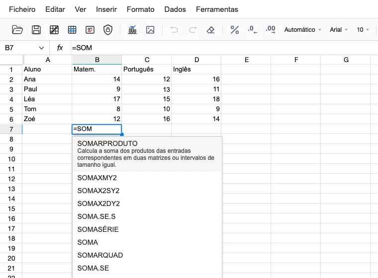
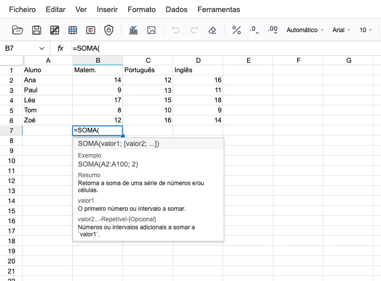
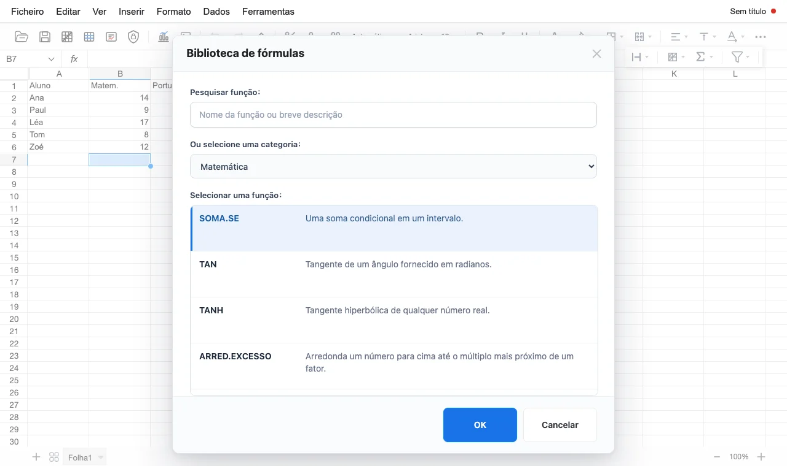

As fórmulas
Escrever uma fórmula
Uma fórmula começa por =. Contém números, textos entre aspas, referências a células, operadores e funções.
=B2*2
=(B2+C2+D2)/3
=MÉDIA(B2:B6)
="Total: "&SOMA(B2:B6)A célula mostra o resultado, a barra de fórmulas a fórmula. As células que dependem de uma célula alterada são logo recalculadas.
Em português, a vírgula é decimal e o ponto e vírgula separa os argumentos: =ARRED(3,14159; 2). Os nomes das funções escrevem-se em minúsculas ou maiúsculas, em português ou em inglês: =soma(B2:B6) e =SUM(B2:B6) são aceites.
Indicar as células com o rato
Ao escrever uma fórmula, um clique numa célula da folha insere o seu endereço, um arrasto insere o intervalo. Cada referência tem a sua cor, na fórmula e na folha.
O preenchimento automático
Desde as primeiras letras de um nome, o DocCells propõe as funções que as contêm: ↑ ↓ para percorrer, Enter, Tab ou um clique para escolher. Depois do parêntesis de abertura, uma ajuda lembra os argumentos.


A soma automática
escreve uma soma. A sua seta propõe Soma, Média, Contagem, Max, Min e Todas as fórmulas: a biblioteca, onde se procura uma função pelo nome, pela descrição ou pela categoria.

Operadores
| Operador | Função |
|---|---|
+ - * / | quatro operações |
^ | potência: =2^10 |
% | percentagem: =20%*B2 |
& | junta textos: =A2&" "&B2 |
= <> | igual, diferente |
< > <= >= | comparações |
( ) | prioridade |
As potências vêm antes dos produtos e quocientes, depois as somas e as comparações. =-2^2 dá −4 (4 no Excel).
Referências
| Escrita | Designa |
|---|---|
B2 | uma célula; acompanha o preenchimento |
$B$2 | a mesma célula, mesmo preenchida |
B$2, $B2 | linha fixa, coluna fixa |
B2:D6 | um intervalo |
B:B, 2:2 | uma coluna, uma linha inteira |
Folha2!B2, 'Notas 2'!B2 | uma célula de outra folha |
notas | um intervalo com nome |
Preenchida para baixo, =B2*$B$1 passa a =B3*$B$1, =B4*$B$1…
Condições
=SE(B2>=10; "aprovado"; "reprovado")
=SE(E(B2>=10; C2>=10); "sim"; "não")
=PARÂMETRO(A2; "a"; 1; "b"; 2; 0)
=CONTAR.SE(B2:B6; ">10")
=SOMA.SE(A2:A6; "Ana"; B2:B6)
=MÉDIA.SE(B2:B6; "<10")- Os valores lógicos escrevem-se
VERDADEIRO()eFALSO(), com os parêntesis. Mostram-se como TRUE e FALSE. - Um critério é um texto:
">10","<>0","Ana". Os carateres universais*e?não são reconhecidos. - Uma célula vazia reconhece-se com
=B2=""; não é igual a 0.
Procurar numa tabela
=PROCV("Léa"; A2:D6; 3; 0)
=ÍNDICE(A2:A6; CORRESP(MÁXIMO(B2:B6); B2:B6; 0))A primeira procura Léa na primeira coluna da tabela e devolve a terceira; o último argumento 0 pede o valor exato. A segunda dá o nome de quem tem a melhor nota.
Datas e horas
Uma data é um número de dias, uma hora uma fração de dia: em células, somam-se e subtraem-se.
=A2+7
=A3-A2
=DIAS(A3; A2)
=DIA.SEMANA(A2; 2)Uma data dada por DATA ou HOJE deve passar por uma célula para ser somada: =HOJE()+1 dá #VALUE!, mas se A1 contém =HOJE(), =A1+1 dá amanhã. O resultado é um número: dar-lhe um formato Data.
Os erros
| Mostrado | Causa |
|---|---|
#NAME? | nome desconhecido: erro de escrita, função não calculada, VERDADEIRO sem parêntesis, texto sem aspas |
#VALUE! | tipo inesperado: um texto onde é preciso um número |
DIV/0 | divisão por zero ou por uma célula vazia |
#N/A | valor não encontrado (CORRESP, PROCV), ou GEO fora do DocGeo |
#REF! | célula ou folha que não existe |
#NUM! | número fora do domínio: =RAIZQ(-1) |
#ERROR! | fórmula mal escrita, ou função não calculada |
SE.ERRO substitui o erro de uma função (#N/A, #NUM!): =SE.ERRO(PROCV(E1; A2:D6; 2; 0); "ausente"). Não substitui o de um cálculo (DIV/0, #VALUE!): contra uma divisão por zero, testar o divisor, =SE(B2; B3/B2; ""), que serve para um zero como para uma célula vazia.